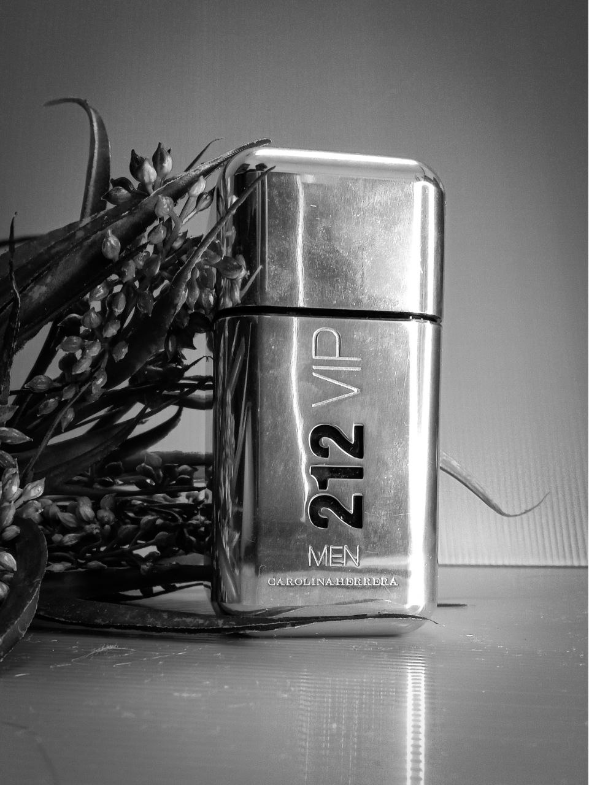
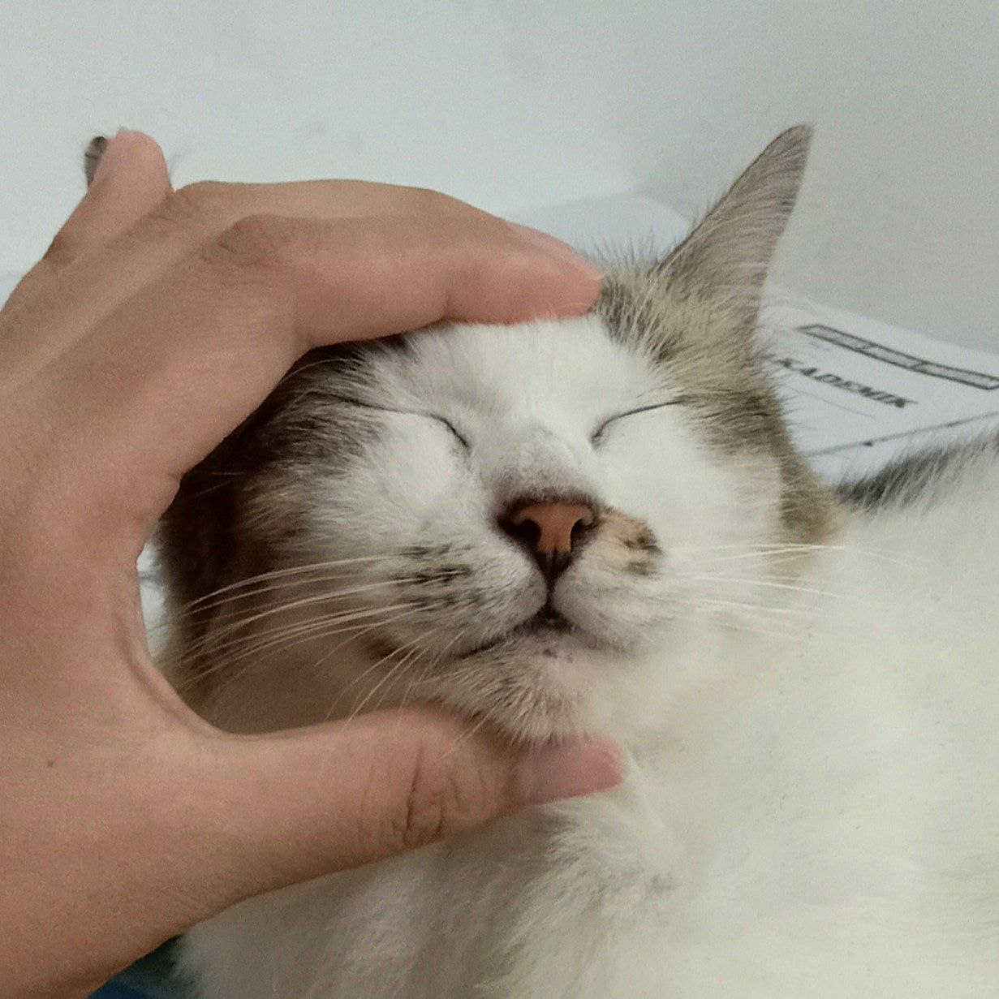

1. Photography.
Photography is a rewarding and entertaining hobby that combines artistic expression, technical skill development, and capturing and sharing moments.
It can enrich lives and be fun for all skill levels. I capture every moment and thing that I find unique and precious. It is always fun to take lovely photos and keep them as memories.

2. Adopting Cats.
Adopting cats goes beyond a hobby. This commitment brings joy, companionship, and both psychological and physical benefits. The adopter's cat bond can bring lasting happiness and fulfilment.
The cat in the first picture is Mayo. She is a lovely Turkish Angora with Tabby breed. (The white cat with stripes). Her kitten is Toka. He's a Pixie Bob breed(The cat with earthy colour stripes). He sure is taking after his dad a lot!
Mayo always scolds her son for being naughty and for attacking her playfully out of nowhere during the day, but then she will eventually stay with him at bedtime and groom Toka no matter how old and big Toka becomes. It's just pure love from a mother to a son. This reminds me that all mother's behaviour is somehow universal regardless of species.
All mothers are precious, and we must treasure them as much as we can; for example, we appreciate our time with them and always treat them with respect. Nevertheless, my cats are one of my main sources of happiness after my family. Oh wait, I forgot... They are my family members too!

